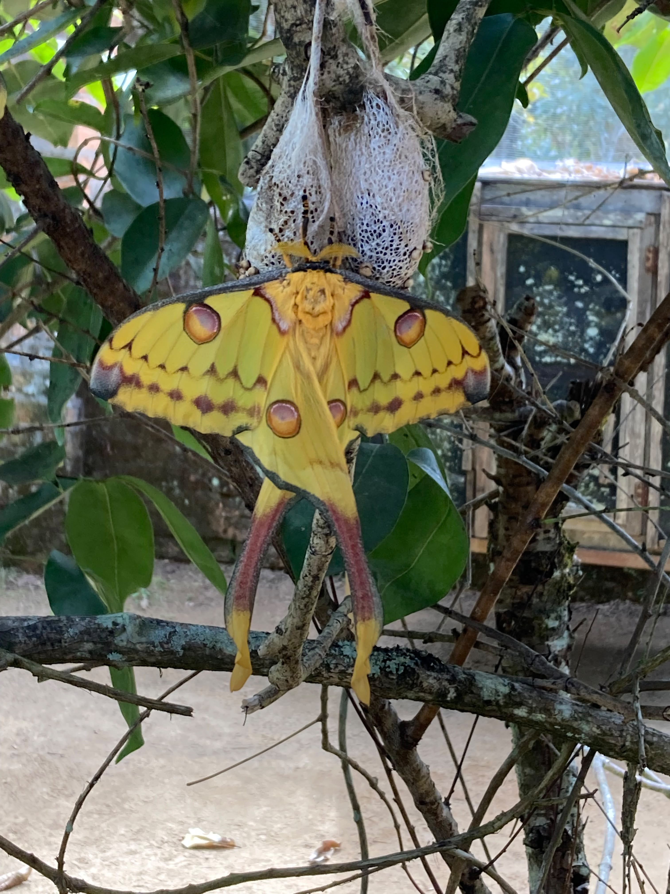

This beautiful, African moth, is sure to brighten up any spot in your home. Some fun facts about the moth are they only live for 10 days! They are nocturnal and do not have a mouth, relying on food that was stored during their caterpillar phase. They are native to the woodlands in Africa. Their cocoons resemble crochet patterns, to ward off rain during the rainy season in Africa!